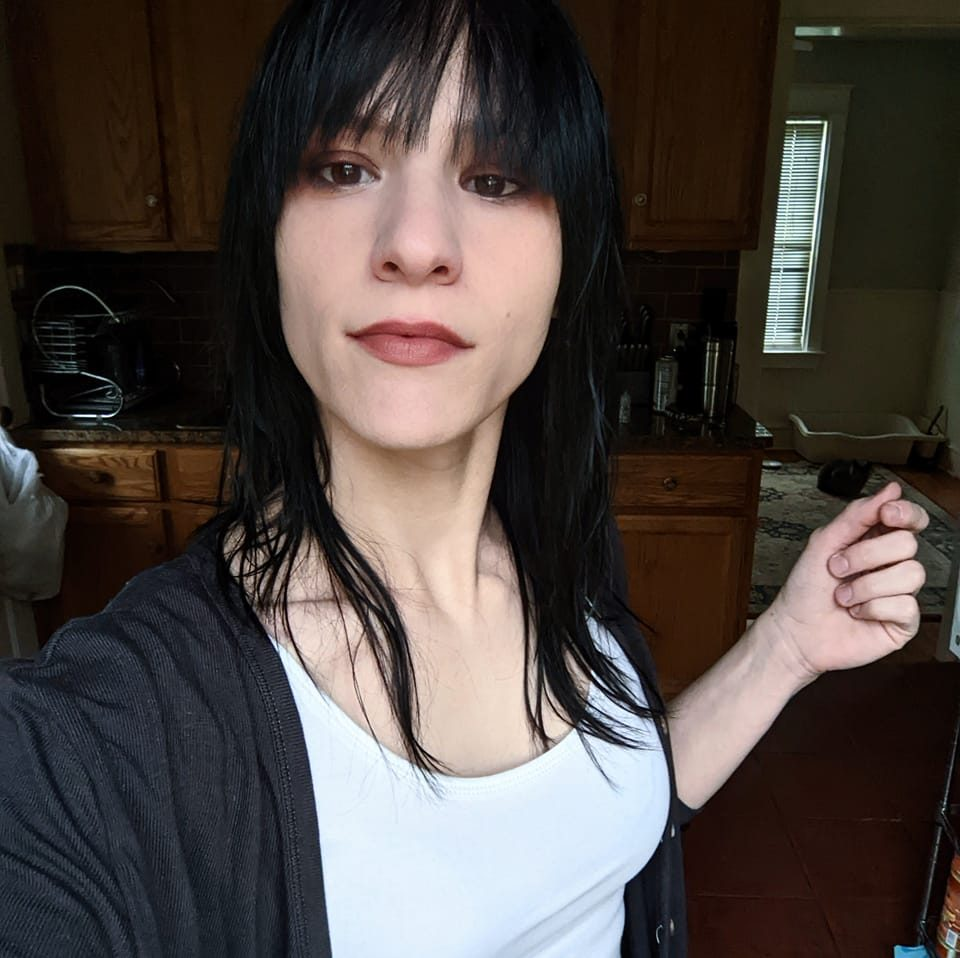

Meet the Analyst
My name is Meg Yohn, and I am an entry level data analyst.
In early 2022, I embarked on a project that changed my outlook on my career path - I didn't know what data analysis was, I hadn't even heard the term, but this was exactly that. A few weeks after finishing my first draft, while looking on a job searching site, that term crossed my path and I thought "What is that? It sounds interesting!" and found that I'd already been doing it - "improperly," but doing it nonetheless.
I decided to pursue it. I have since completed the Google IT Support Specialist, Google Data Analyst, IBM Data Analyst, and IBM Data Analysis & Visualization Fundamentals certifications. After completing those, I found I still was not finding much promise in my job prospects - so have since enrolled in Umass Global to acquire a Bachelor's in Data Science - which should be completed some time in 2023, with dedication. I also spend much time on DataCamp and HackTheBox working to develop my skills, as analysis isn't my only possibility - Programming, ethical hacking, and many other areas of data analytics and data science hold my interest.
Although I am very fresh, I am driven, learn fast, and have a genuine thirst for knowledge and growth. I don't stop until I have an answer; and that's why this work calls to me.
I currently have experience in Excel, Rstudio, SQL/Postgresql/Mysql, Python, Cognos, Tableau, Bash, Powershell, Watson, PowerBI, and some general web programming language such as HTML/CSS. I have stuck my toes in Ruby before - I didn't get far and don't remember any of it, but the point is that I'm open to learning anything.
My primary field of interest to bring my analysis skills back to one day, is animal welfare. Data is so incredibly valuable in this field, it truly saves lives, and I'd love to come around full-circle some day, perhaps acting as a consultant. Other fields that hold my interest are: Medical, Criminal Justice/Forensics, Music - perhaps some form of consumer statistics and algorithm tech? Education, Art, literature, and beyond. In reality, I'm happy to fit wherever I can - but straight financials don't really grab my attention, I want more insights, and perhaps to make a bigger difference.
But what about me, as a person? In my spare time, I enjoy learning new things, reading, listening to music, spending time with my cats, perfecting my espresso drinks, and hiking when I have the opportunity.